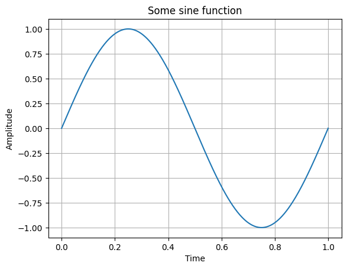
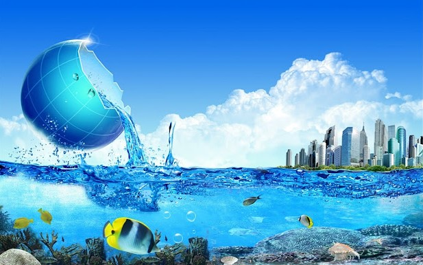

And this is the second point of this pointless listing
After this, there is some text with funny words. With a “/” or two spaces you can create a line break, as seen here.
Then the text continues in the next line.
some bulletpoint
more bulletpoints
Code
# This is a cell for some calculations or plot or something, it's just plain pythonimport numpy as np import matplotlib.pyplot as plt f = np.linspace(0,1,1000)x = np.sin(2*np.pi*f)plt.close('all')plt.figure(1)plt.plot(f,x)plt.title('Some sine function')plt.xlabel('Time')plt.ylabel('Amplitude')plt.grid()

Then, by pressing Crtl+Shift+K (just as in a default quarto document) you can create a quarto output in the format specified in the header. It depicts everything from Text to code to figures, depending on the format chosen.
You can even insert funny formulae, no need to change the cell to latex \[\begin{equation}
Y[k] = \sum_{n = -\infty}^{\infty}x[k]\cdot h[k-n].
\end{equation}\]
If you want to have a nice figure:

I want this era of artstlye back :(
Matlab calls or data calls in general
In the following, calls are made to the matlab files for first order modulator. All the data from simulation are stored in a seperate folder and can be accessed by just giving relative paths for further processing in python
Matlab calls or data calls in general
In the following, calls are made to the matlab files for first order modulator. All the data from simulation are stored in a seperate folder and can be accessed by just giving relative paths for further processing in python
Code
import numpy as npimport matplotlib.pyplot as pltimport scipy as spfrom scipy.io import loadmat #this actually enables the import of .mat#import matlab datatime_domain = loadmat("../../zip_meiners/behav/dsm_l1/data/dat_time_domain_plot.mat")spectral_analysis1 = loadmat("../../zip_meiners/behav/dsm_l1/data/dat_spectral_analysis1.mat")spectral_analysis2 = loadmat("../../zip_meiners/behav/dsm_l1/data/dat_spectral_analysis2.mat")windowed_plot = loadmat("../../zip_meiners/behav/dsm_l1/data/dat_windowed_plot.mat")#to access imported matlab datatime = time_domain['t']voltage = time_domain['u']plt.figure(1)plt.plot(time,voltage, linewidth=2)#plt.stairs(time,voltage)plt.title('Time domain plot first order $\Delta \Sigma$ modulator')plt.xlabel('Time [s]')plt.ylabel('Amplitude [V]')plt.grid()